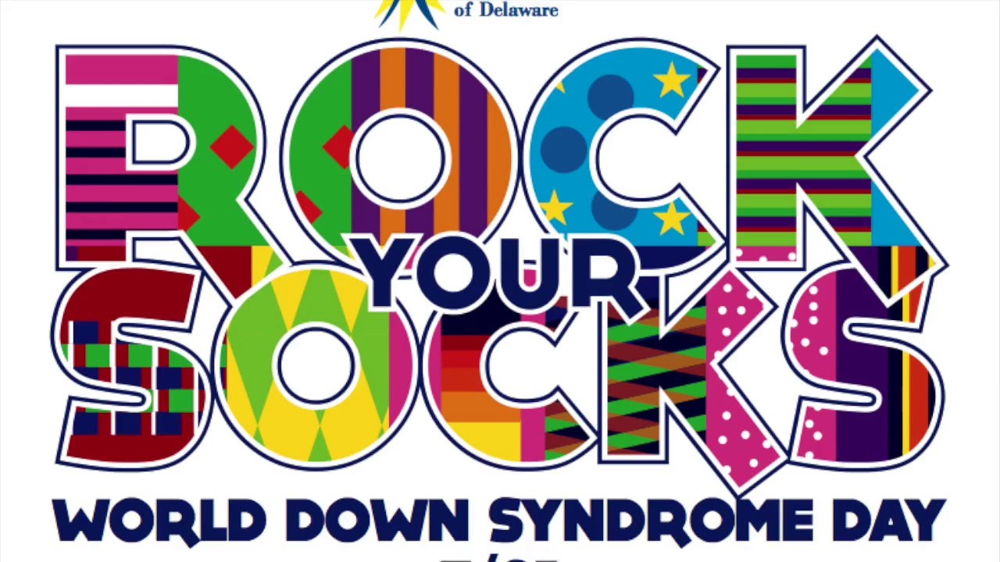
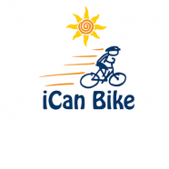
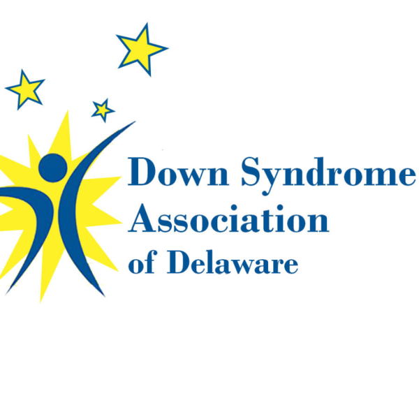
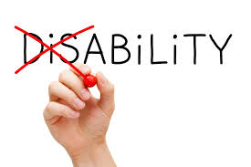
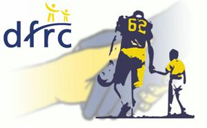

What is a Disability?
A disability isn't just something that might make us look different, it's a condition or a limitation in a person's ability to do certain things. A lot of people think of a disability as someone who doesn't act or look like the rest of us. Although someone may act and look different, that doesn't mean they are different. Some examples of disabilities include:
- Vision impairment
- Deaf or hard of hearing
- Mental health conditions
- Intellectual disability
- Brain injury
- Physical disability
Why am I Passionate About This Topic?
To start off, I have a cousin who has Down Syndrome and my family has done a lot of stuff with her and for her. Over the years I have learned that she is no different than the rest of us. Another reason I got into this topic is becasue of my aunt. My aunt is very passionate about this and has encouraged me to get involved. For example, I have done many camps and activities with her for the Delaware Down Syndrome Association such as, I Can Bike, the Special Olympics, and Rock Your Socks. I am also a member of the Blue Gold Club at my school and in that club we have gone on many field trips and coordinated many events that have raised money for the Delaware Down Syndrome Association.
    
What's the Problem and How Can We Fix It?
The problem is that kids with disbilities are being bullied by other children due to their lack of knowledge about the topic. Sometimes people are afraid of what they don't know. Certain disabilities may make people appear different than others which might make people uncomfortable and scared. Now, how can we prevent this? First you need to understand the disability and make children aware of it. You should educate children on how to treat people with disabilities and what to expect, so it doesn't come up out of the blue. The kids mean no harm whatsoever, but not everybody understands that.